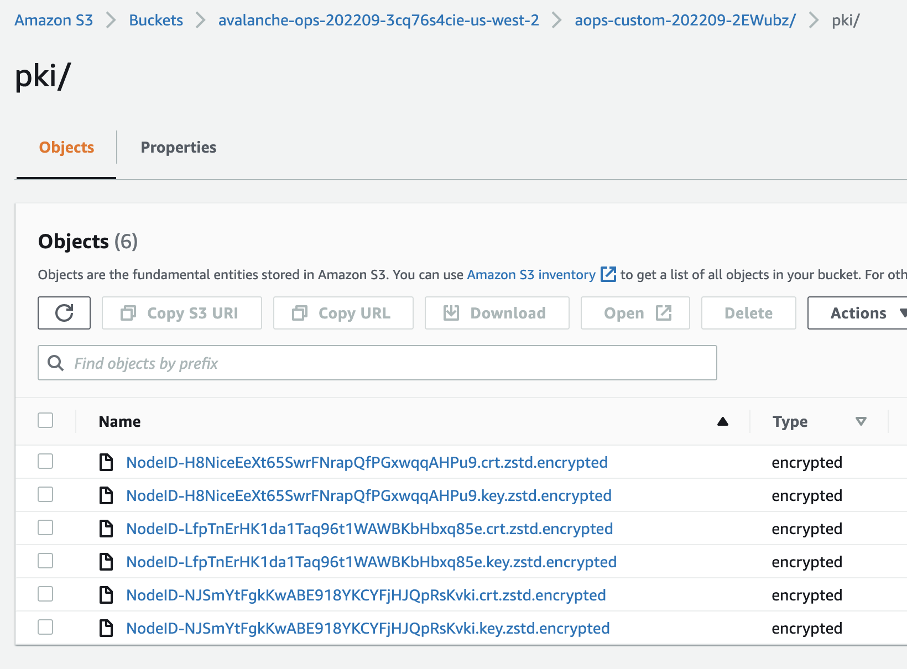

Automate Avalanche node operations: avalanche-ops
Who am I?
- 이규호 (Gyuho Lee)
- Protocol Engineer, Ava Labs
- github.com/gyuho
- linkedin.com/in/gyuho
- twitter.com/gyuhox
- t.me/leegyuho (Telegram)
Vision #1
If we are to develop a reliable and faster way to validate a fix without impacting the stability of the live backend, then we need to start up the entire stack sandboxed.
Vision #2
If an instituition needs to keep its blockchain application private until the release, then it needs its own sandboxed, isolated network for testing.
Vision #3
If we are to decentralize a blockchain network, then anyone should be able to run a node, in the most affordable way possible.
Steps
- Understand what it takes to run an Avalanche node
- Formulate Day-1 user experience: set up a node
- Formulate Day-2 user experience: node operation
- Implement command-line interface for automation
News: avalanche-ops (AWS)
- Single command to set up nodes (and clean up)
- Single command to set up subnet
- Supports main/test/custom network
- Fault tolerant (higher uptime, more staking rewards)
- Static data volume for faster recovery
- Static IP for monitoring consistency
- Minimize cloud/infra costs
- Automated load/failure injection testing
Avalanche node infrastructure
Requirements to be an Avalanche validator
Typical validator setup (AWS)
- Host machine (AMD64, 8 CPU + 16 GiB RAM)
- Dedicated disk/volume (SSD, 1 TiB)
- Staking certificate (X.509 certificate)
- Health checks
- Logging
- Metrics
- (Optional) Static IP/DNS
Avalanche validator security
- Staking certificate maps to a unique Node ID
- Only one Node ID can be connected to network
- Two nodes can't join network with same Node ID
- DO NOT SHARE your staking certificate
- DO NOT SHARE your Node ID
- Your signing key DOES NOT live in the node
- Staking port open to internet for p2p network
- HTTP/SSH port restricted to your workspace IP
Set up Avalanche node
Day-1
Case #1. Create isolated network
- Entirely self-contained stack
- No production state dependency
- Useful for private testing/experiments
- Requires anchor(seed) and non-anchor nodes
- Anchor nodes must be bootstrapped first
- Non-anchor nodes later join anchor nodes
- Genesis can be generated from anchor nodes
- Requires control plane for anchor node discovery
Case #1. Create isolated network
How does avalanche-ops automate custom network
- Launch anchor nodes first (before non-anchor)
- Each anchor node launches and waits for others
- Each anchor node publishes its node info to S3
- Each anchor node discovers each other by polling S3
- Poll until target number of anchor nodes are ready
- Anchor nodes writes genesis with themselves as initial stakers and uploads to S3
- Non-anchor nodes downloads genesis from S3
- Non-anchor nodes discovers anchor nodes by listing node info via S3, to join the network
Case #1. Create isolated network
Example implementation in avalanche-ops

avalancheup is control plane, avalanched is daemon
Case #2. Join public test network
- No need to set up seed anchor nodes
- Just connect to well-established seed anchor nodes
- Public network closely simulates main network
- Useful for your app staging environments
- Provides built-in subnet explorer integration
- Request funds from faucet for test transactions
- Take a few hours for initial state sync
Case #2. Join public test network
Example implementation in avalanche-ops

Case #3. Join public "main" network
- No need to set up seed anchor nodes
- Just connect to well-established seed anchor nodes
Day-1 best practices
- Encrypt staking certificate for backups
- avalanched generates certs on the host
- avalanched envelope encrypts certs with KMS
- Static EBS volume creation
- Map a node and its state to an availability zone
- Do not use ephemeral instance storage
- Provision a separate EBS volume (cheaper)
- On EC2 termination, let EBS volume be detached
- Do not delete the EBS volume
- Reuse volume to reload previous certs/chain state
Day-1: single-command


Day-1: create nodes
Day-1: backup/encrypt certs
Operate Avalanche node
Day-2
Day-2 best practices
- Reuse static EBS volume
- Reuse the detached EBS volume
- Useful when running Spot instance
- Reload the chain state for faster bootstrapping
- Reuse the staking certificate for maximum uptime
- avalanche-ops remaps available volumes (reuse)
- Monitor critical metrics
- Avalanche use Prometheus metrics
- avalanche-ops uses avalanche-telemetry (scrape)
Day-2: fault tolerant infra + monitoring
Day-2: monitoring
Define scrape rules with regex

Kubernetes (EKS) vs. avalanche-ops
- avalanche-ops is a command-line interface
- avalanche-ops is a self-service tool
- avalanche-ops does not to replace K8s-based infra
- Kubernetes makes sense iff you manage >100 nodes
- If you run a node as a hobby, K8s is overkill/costly
- Container-based stateful application is still early
- With K8s, you may face some issues with CSI driver
- "volume's been terminating for hours"
Cloud bill: cost of running a node
- c5.2xlarge alone costs >USD$ 3,000 (yearly)
- Doesn't include EBS volume costs and others
- Staking 2,000 AVAX rewards ~USD$ 3,000 (8%/yr)
- With AVAX price USD$ 16.5, you are losing money
Cloud bill: cheapest way
- avalanche-ops supports spot instance
- Remaps EBS volume + EIP on spot instance termination, with minimum uptime impact
- avalanche-ops supports ARM64 (Graviton)
- Spot instance + ARM64 saved >40% in cloud bills
Automatic subnet installation
avalanche-ops implements transaction issuer + remote command execution for subnet installation!
- Takes VM/chain parameters
- VM binary path
- Chain genesis file
- Subnet/chain config (optional)
- Issues CreateSubnetTx
- Add subnet ID to track-subnets flag (via SSM)
- Download VM binary in remote machines
- Download subnet config in remote machines
- Issues CreateBlockchainTx
- Download chain config in remote machines
Automatic subnet installation
Automatic subnet installation
Examples can be found hypersdk#94
"avalancheup-aws install-subnet-chain"
- VM binary path
- Chain genesis file
- Subnet/chain config (optional)
- Target node + instance IDs
Extending avalanche-ops
- avalanche-ops is a command-line interface
- Uses AWS Cloudformation for resource creation
- avalanched agent is downloaded in the user script
- Can be easily integrated with other tools
- CDK can import Cloudformation templates (code)
- Blog Avalanche node deployment with CDK
Contributions
- Identified AWS infrastructure components for running an Avalanche validator
- Showed AWS best practices to keep your Avalanche node safe and reliable
- Introduced avalanche-ops that can launch a node with a single command, in most cost-effective way
- Proposed future integration paths with CDK and avalanche-cli